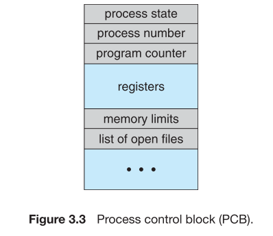

Each process is represented in the OS by a process control block(PCB) - also called a task control block.

PCB包含的內容
- Process state: The state may be new, ready, running, waiting, halted, and so on.
- Program counter: The counter indicates the address of the next instruction to be executed for this process.
- Program counter: The registers vary in number and type, depending on the computer architecture. The include accumulators, index registers, stack pointers, and general-purpose registers, plus any condition-code information. Along with the program counter, this state infromation must be saved when an interrupt occurs, to allow the process to be continued correctly afterward.
CPU-scheduling information: 包含process的優先權, scheduling queues的pointer, scheduling 的參數等。
Memory-management information: 包含 base register, limit register, page tables, segment tables。
Accounting information: 包含CPU數量, real time used, time limits, account numbers, process numbers等。
I/O status information: 包含有哪些I/O裝置分配給process, a list of open files, and so on.
簡而言之, the PCB serves as the repository for any information that may vary from process to process.